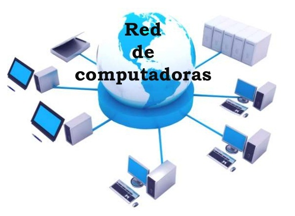

Red de Computadoras

Una red de computadoras (también llamada red de ordenadores, red de comunicaciones de datos, red informática) es un conjunto de equipos informáticos y software conectados entre sí por medio de dispositivos físicos que envían y reciben impulsos eléctricos, ondas electromagnéticas o cualquier otro medio para el transporte de datos, con la finalidad de compartir información, recursos y ofrecer servicios.
Como en todo proceso de comunicación, se requiere de un emisor, un mensaje, un medio y un receptor. La finalidad principal para la creación de una red de ordenadores es compartir los recursos y la información en la distancia, asegurar la confiabilidad y la disponibilidad de la información, aumentar la velocidad de transmisión de los datos y reducir el costo. Un ejemplo es Internet, el cual es una gran red de millones de ordenadores ubicados en distintos puntos del planeta interconectados básicamente para compartir información y recursos.